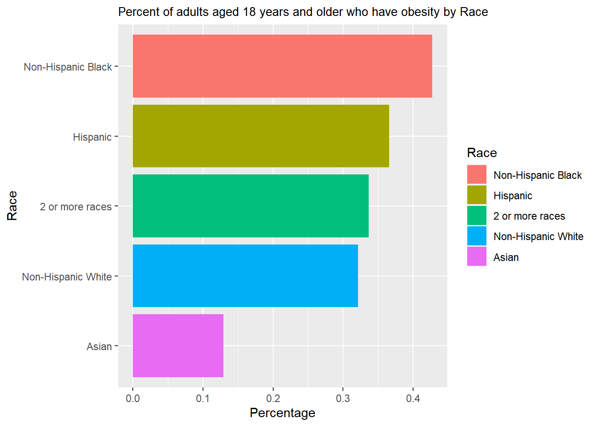
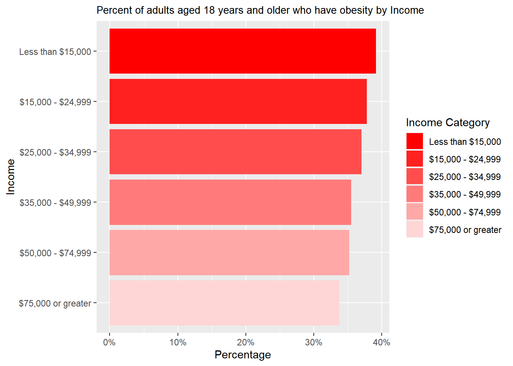
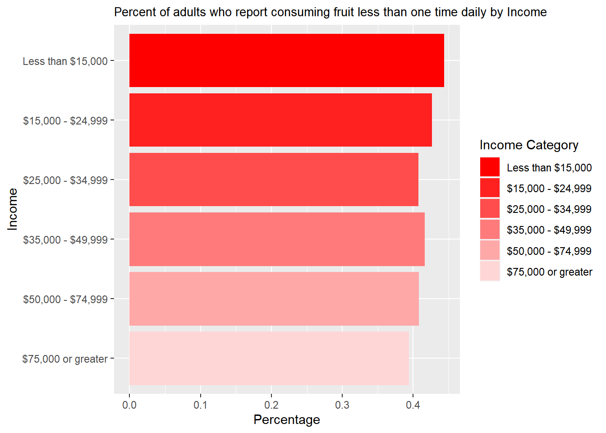
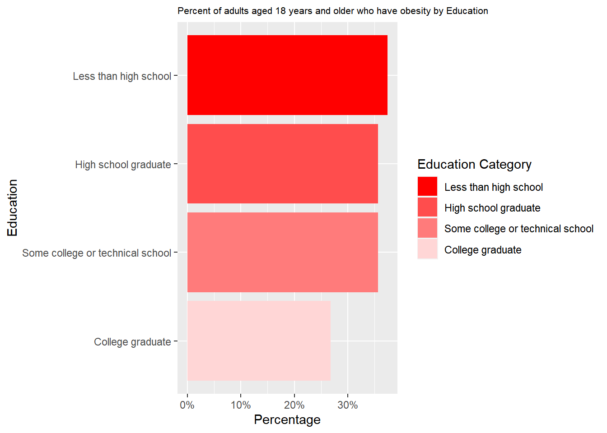
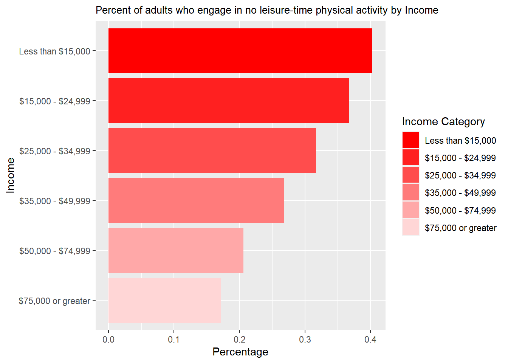
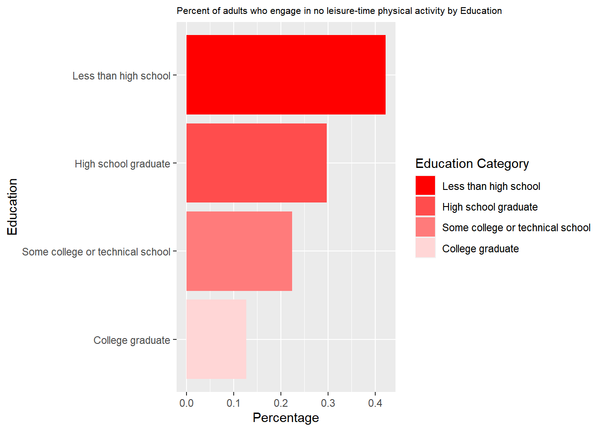
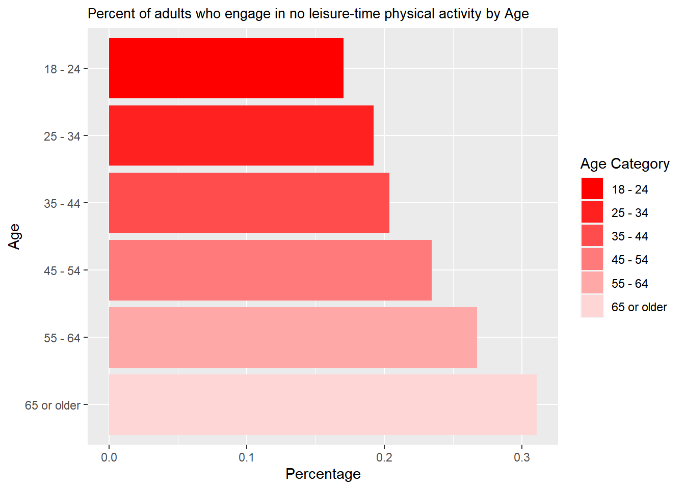
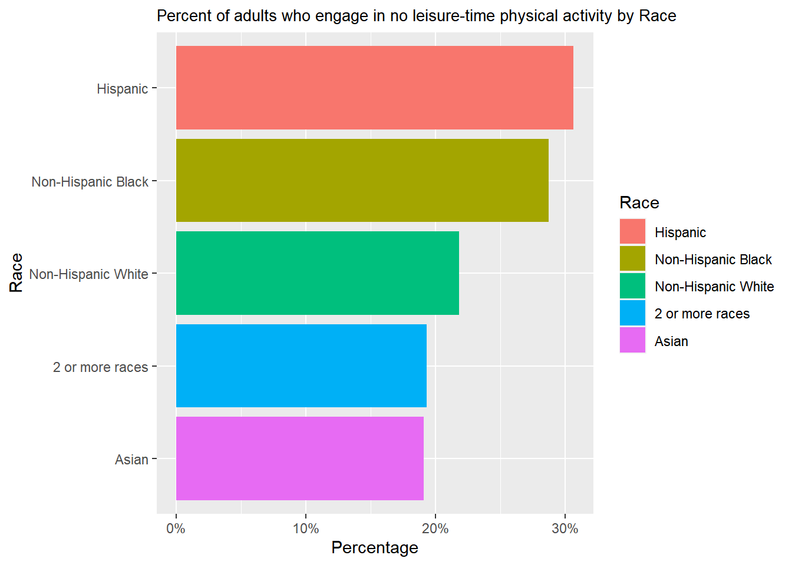

## Income#'Percent of adults who report consuming fruit less than one time daily'IncomeQuestion <-function(df, Question1) {df_fruit1 <- df %>%filter(Question == Question1) %>%filter(Category =='Income') %>%filter (YearStart =="2021") %>%group_by(CategoryVal) %>%summarize(Sum_Column1 =sum(Sample,na.rm =TRUE), Sum_Column2 =sum(SampleSize,na.rm =TRUE))df_fruit1$Value <- df_fruit1$Sum_Column1 / df_fruit1$Sum_Column2df_fruit1 <- df_fruit1 %>%filter(CategoryVal!='Data not reported')level_order <-c("Less than $15,000","$15,000 - $24,999","$25,000 - $34,999","$35,000 - $49,999","$50,000 - $74,999","$75,000 or greater")# Factor the CategoryVal columndf_fruit1$CategoryVal <-factor(df_fruit1$CategoryVal, levels = level_order)color_palette <-c("#FF0000", "#FF2020", "#FF4D4D", "#FF7B7B", "#FFA8A8", "#FFD6D6")plot1 <-ggplot(df_fruit1, aes(x = CategoryVal, y = Value, fill = CategoryVal)) +geom_bar(stat ="identity") +labs(x ="Income", y ="Percentage",fill ="Income Category") +scale_fill_manual(values = color_palette) +ggtitle(paste(Question1,"by Income")) +theme(plot.title =element_text(size =10)) +scale_x_discrete(limits =rev(levels(df_fruit1$CategoryVal))) +coord_flip()return(plot1)}#IncomeQuestion(df,'Percent of adults who report consuming fruit less than one time daily')
Code
## EducationEducationQuestion <-function(df, Question1) {df_fruit1 <- df %>%filter(Question == Question1) %>%filter(Category =='Education') %>%filter (YearStart =="2021") %>%group_by(CategoryVal) %>%summarize(Sum_Column1 =sum(Sample,na.rm =TRUE), Sum_Column2 =sum(SampleSize,na.rm =TRUE))df_fruit1$Value <- df_fruit1$Sum_Column1 / df_fruit1$Sum_Column2level_order <-c("Less than high school","High school graduate","Some college or technical school","College graduate")# Factor the CategoryVal columndf_fruit1$CategoryVal <-factor(df_fruit1$CategoryVal, levels = level_order)color_palette <-c("#FF0000", "#FF4D4D", "#FF7B7B", "#FFD6D6")plot1 <-ggplot(df_fruit1, aes(x = CategoryVal, y = Value, fill = CategoryVal)) +geom_bar(stat ="identity") +labs(x ="Education", y ="Percentage",fill="Education Category") +scale_fill_manual(values = color_palette) +ggtitle(paste(Question1,"by Education")) +theme(plot.title =element_text(size =8)) +scale_x_discrete(limits =rev(levels(df_fruit1$CategoryVal))) +coord_flip()return(plot1)}#EducationQuestion(df,'Percent of adults who report consuming fruit less than one time daily')
Code
## AgeAgeQuestion <-function(df, Question1) {df_fruit1 <- df %>%filter(Question == Question1) %>%filter(Category =='Age (years)') %>%filter (YearStart =="2021") %>%group_by(CategoryVal) %>%summarize(Sum_Column1 =sum(Sample,na.rm =TRUE), Sum_Column2 =sum(SampleSize,na.rm =TRUE))df_fruit1$Value <- df_fruit1$Sum_Column1 / df_fruit1$Sum_Column2level_order <-c("18 - 24","25 - 34","35 - 44","45 - 54","55 - 64","65 or older")# Factor the CategoryVal columndf_fruit1$CategoryVal <-factor(df_fruit1$CategoryVal, levels = level_order)color_palette <-c("#FF0000", "#FF2020", "#FF4D4D", "#FF7B7B", "#FFA8A8", "#FFD6D6")plot1 <-ggplot(df_fruit1, aes(x = CategoryVal, y = Value, fill = CategoryVal)) +geom_bar(stat ="identity") +labs(x ="Age", y ="Percentage", fill="Age Category") +scale_fill_manual(values = color_palette) +ggtitle(paste(Question1,"by Age")) +theme(plot.title =element_text(size =10)) +scale_x_discrete(limits =rev(levels(df_fruit1$CategoryVal))) +coord_flip()return(plot1)}#AgeQuestion(df,'Percent of adults who report consuming fruit less than one time daily')
Code
#RaceRaceQuestion <-function(df, Question1) {df_fruit1 <- df %>%filter(Question == Question1) %>%filter(Category =='Race/Ethnicity') %>%filter (YearStart =="2021") %>%group_by(CategoryVal) %>%summarize(Sum_Column1 =sum(Sample,na.rm =TRUE), Sum_Column2 =sum(SampleSize,na.rm =TRUE))df_fruit1$Value <- df_fruit1$Sum_Column1 / df_fruit1$Sum_Column2df_fruit1 <- df_fruit1 %>%filter(CategoryVal!='Hawaiian/Pacific Islander') %>%filter(CategoryVal!='Other') %>%filter(CategoryVal!='American Indian/Alaska Native')plot1 <-ggplot(df_fruit1, aes(x =reorder(CategoryVal, Value), y = Value, fill =reorder(CategoryVal, -Value))) +geom_bar(stat ="identity") +labs(x ="Race", y ="Percentage",fill ="Race") +ggtitle(paste(Question1,"by Race")) +theme(plot.title =element_text(size =10)) +coord_flip()return(plot1)}#RaceQuestion(df, 'Percent of adults who report consuming fruit less than one time daily')
Code
QuestionCategory <-function(df,Question1,Category1) {if (Category1 =="Income") {# Function for case 1IncomeQuestion(df,Question1) } elseif (Category1 =="Education") {# Function for case 2EducationQuestion(df,Question1) } elseif (Category1 =="Age") {# Function for case 3AgeQuestion(df,Question1) } elseif (Category1 =="Race") {# Function for case 4RaceQuestion(df,Question1) } else {# Default action if case is not recognizedprint("Invalid case") }}QuestionCategory(df,'Percent of adults aged 18 years and older who have obesity','Race')

Code
QuestionCategory(df,'Percent of adults aged 18 years and older who have obesity','Income')
Code
QuestionCategory(df,'Percent of adults aged 18 years and older who have obesity','Education')
Code
QuestionCategory(df,'Percent of adults aged 18 years and older who have obesity','Age')
Summary Interpretation (Percent of adults aged 18 years and older who have obesity):
Income: The bar graph shows that the people earning the most have the lowest percentage of obesity. On the other hand, the people who make the least amount of money have the highest percentage of obesity.
Education: The bar graph shows that the most educated people have a minimum percentage of obesity rate. However, people with the lowest education qualification have a maximum percentage of obesity rate.
Age: The age group 18 to 24 has the lowest obesity percentage. Then there is an increasing trend from the 18 to 24 age group to the age group of 45- 54. Then, after this age range, the percentage of obesity starts decreasing.
Race: Non-Hispanic black individuals tend to have the highest obesity rates, while Asian individuals have the lowest.
Code
QuestionCategory <-function(df,Question1,Category1) {if (Category1 =="Income") {# Function for case 1IncomeQuestion(df,Question1) } elseif (Category1 =="Education") {# Function for case 2EducationQuestion(df,Question1) } elseif (Category1 =="Age") {# Function for case 3AgeQuestion(df,Question1) } elseif (Category1 =="Race") {# Function for case 4RaceQuestion(df,Question1) } else {# Default action if case is not recognizedprint("Invalid case") }}QuestionCategory(df,'Percent of adults who report consuming fruit less than one time daily','Race')

Code
QuestionCategory(df,'Percent of adults who report consuming fruit less than one time daily','Income')

Code
QuestionCategory(df,'Percent of adults who report consuming fruit less than one time daily','Education')
Code
QuestionCategory(df,'Percent of adults who report consuming fruit less than one time daily','Age')
Summary Interpretation (Percent of adults who report consuming fruit less than one time daily): Income: The most minor percentage of adults consuming fruit less than one time daily are the people who earn the most. On the other hand, the highest percentage of people consuming fruit less than one time daily are the ones who make less than $15,000.
Education: The bar graph shows that the most educated people, having the lowest percentage, reported consuming fruit less than once daily. However, people who were high school graduates had the highest percentage who reported consuming fruit less than once daily.
Age: The oldest group, having the lowest percentage, reported consuming fruit less than once daily. Meanwhile, people between 18 and 24 have the highest percentage of reported consuming fruit less than one time daily.
Race: People of 2 or more races have the highest percentage of reported consuming fruit less than once daily, while Hispanic individuals have the lowest.
Code
QuestionCategory <-function(df,Question1,Category1) {if (Category1 =="Income") {# Function for case 1IncomeQuestion(df,Question1) } elseif (Category1 =="Education") {# Function for case 2EducationQuestion(df,Question1) } elseif (Category1 =="Age") {# Function for case 3AgeQuestion(df,Question1) } elseif (Category1 =="Race") {# Function for case 4RaceQuestion(df,Question1) } else {# Default action if case is not recognizedprint("Invalid case") }}QuestionCategory(df,'Percent of adults who engage in no leisure-time physical activity','Race')

Code
QuestionCategory(df,'Percent of adults who engage in no leisure-time physical activity','Income')

Code
QuestionCategory(df,'Percent of adults who engage in no leisure-time physical activity','Education')

Code
QuestionCategory(df,'Percent of adults who engage in no leisure-time physical activity','Age')

Question : Percent of adults who engage in no leisure-time physical activity
Income: From the bar plot, an increasing percentage is visible from the most earned group of people to the least-earned group of people.
Education: Likewise, in the “Income Category,” an increasing percentage is visible from the most educated people to the least educated people
Age: a decreasing percentage is visible from the oldest people to the youngest people who engage in no leisure-time physical activity
Race: Hispanics have the highest percentage of reported consuming fruit less than once daily, while Asian individuals have the lowest.
Conclusion:
Q3,4. Socioeconomic factors, educational attainment, age, and race collectively influence health-related behaviors. For example, people earning the most tend to exhibit similar behavior. On the other hand, people with minimal income demonstrate identical behaviors. Then, the youngest group of people either carries a particular class’s maximum or minimum percentages.
Code
ScatterplotQIncome <-function(df,Question1,Question2) {df_Question1 <- df %>%filter(Question == Question1) %>%filter(Category =='Income') %>%filter (YearStart =="2021") %>%group_by(CategoryVal) %>%summarize(Sum_Column1 =sum(Sample,na.rm =TRUE), Sum_Column2 =sum(SampleSize,na.rm =TRUE))df_Question1$Value <- df_Question1$Sum_Column1 / df_Question1$Sum_Column2df_Question2 <- df %>%filter(Question == Question2) %>%filter(Category =='Income') %>%filter (YearStart =="2021") %>%group_by(CategoryVal) %>%summarize(Sum_Column1 =sum(Sample,na.rm =TRUE), Sum_Column2 =sum(SampleSize,na.rm =TRUE))df_Question2$Value <- df_Question2$Sum_Column1 / df_Question2$Sum_Column2df_Question1 <- df_Question1 %>%filter(CategoryVal!='Data not reported')df_Question2 <- df_Question2 %>%filter(CategoryVal!='Data not reported')df_merged <-merge(df_Question1, df_Question2, by ="CategoryVal", all =TRUE)colnames(df_merged)[4] <-"Question1"colnames(df_merged)[7] <-"Question2"scatter_plot <-plot_ly(df_merged, x =~Question1, y =~Question2, text=~CategoryVal,hoverinfo ='text') # Customize the layoutscatter_plot <- scatter_plot %>%layout(xaxis =list(title =paste(Question1,'by Income'),titlefont =list(size =10# Change the size of the x-axis label ) ),yaxis =list(title =paste(Question2,'by Income'),titlefont =list(size =10# Change the size of the x-axis label ) ),title ="Scatterplot of the comparison of two questions by Income" )return(scatter_plot)}#ScatterplotQIncome(df,Question1,Question2)
Code
#Question1 = 'Percent of adults who report consuming fruit less than one time daily'#Question2 = 'Percent of adults aged 18 years and older who have obesity'ScatterplotQEducation <-function(df,Question1,Question2) {df_Question1 <- df %>%filter(Question == Question1) %>%filter(Category =='Education') %>%filter (YearStart =="2021") %>%group_by(CategoryVal) %>%summarize(Sum_Column1 =sum(Sample,na.rm =TRUE), Sum_Column2 =sum(SampleSize,na.rm =TRUE))df_Question1 <- df_Question1 %>%filter(CategoryVal!='Data not reported')df_Question1$Value <- df_Question1$Sum_Column1 / df_Question1$Sum_Column2df_Question2 <- df %>%filter(Question == Question2) %>%filter(Category =='Education') %>%filter (YearStart =="2021") %>%group_by(CategoryVal) %>%summarize(Sum_Column1 =sum(Sample,na.rm =TRUE), Sum_Column2 =sum(SampleSize,na.rm =TRUE))df_Question2$Value <- df_Question2$Sum_Column1 / df_Question2$Sum_Column2df_merged <-merge(df_Question1, df_Question2, by ="CategoryVal", all =TRUE)colnames(df_merged)[4] <-"Question1"colnames(df_merged)[7] <-"Question2"scatter_plot <-plot_ly(df_merged, x =~Question1, y =~Question2, text=~CategoryVal,hoverinfo ='text') # Customize the layoutscatter_plot <- scatter_plot %>%layout(xaxis =list(title =paste(Question1,'by Income'),titlefont =list(size =10# Change the size of the x-axis label ) ),yaxis =list(title =paste(Question2,'by Income'),titlefont =list(size =10# Change the size of the x-axis label ) ),title ="Scatterplot of the comparison of two questions by Education" )return(scatter_plot)}#ScatterplotQEducation(df,Question1,Question2)
Code
#Question1 = 'Percent of adults who report consuming fruit less than one time daily'#Question2 = 'Percent of adults aged 18 years and older who have obesity'ScatterplotQAge <-function(df,Question1,Question2) {df_Question1 <- df %>%filter(Question == Question1) %>%filter(Category =='Age (years)') %>%filter (YearStart =="2021") %>%group_by(CategoryVal) %>%summarize(Sum_Column1 =sum(Sample,na.rm =TRUE), Sum_Column2 =sum(SampleSize,na.rm =TRUE))df_Question1$Value <- df_Question1$Sum_Column1 / df_Question1$Sum_Column2df_Question2 <- df %>%filter(Question == Question2) %>%filter(Category =='Age (years)') %>%filter (YearStart =="2021") %>%group_by(CategoryVal) %>%summarize(Sum_Column1 =sum(Sample,na.rm =TRUE), Sum_Column2 =sum(SampleSize,na.rm =TRUE))df_Question2$Value <- df_Question2$Sum_Column1 / df_Question2$Sum_Column2df_merged <-merge(df_Question1, df_Question2, by ="CategoryVal", all =TRUE)colnames(df_merged)[4] <-"Question1"colnames(df_merged)[7] <-"Question2"scatter_plot <-plot_ly(df_merged, x =~Question1, y =~Question2, text=~CategoryVal,hoverinfo ='text') # Customize the layoutscatter_plot <- scatter_plot %>%layout(xaxis =list(title =paste(Question1,'by Age'),titlefont =list(size =10# Change the size of the x-axis label ) ),yaxis =list(title =paste(Question2,'by Age'),titlefont =list(size =10# Change the size of the x-axis label ) ),title ="Scatterplot of the comparison of two questions by Age" )return(scatter_plot)}#ScatterplotQAge(df,Question1,Question2)
Code
#Question1 = 'Percent of adults who report consuming vegetables less than one time daily'#Question2 = 'Percent of adults aged 18 years and older who have obesity'ScatterplotQRace <-function(df,Question1,Question2) {df_Question1 <- df %>%filter(Question == Question1) %>%filter(Category =='Race/Ethnicity') %>%filter (YearStart =="2021") %>%group_by(CategoryVal) %>%summarize(Sum_Column1 =sum(Sample,na.rm =TRUE), Sum_Column2 =sum(SampleSize,na.rm =TRUE))df_Question1 <- df_Question1 %>%filter(CategoryVal!='Hawaiian/Pacific Islander') %>%filter(CategoryVal!='Other') %>%filter(CategoryVal!='American Indian/Alaska Native')df_Question1$Value <- df_Question1$Sum_Column1 / df_Question1$Sum_Column2df_Question2 <- df %>%filter(Question == Question2) %>%filter(Category =='Race/Ethnicity') %>%filter (YearStart =="2021") %>%group_by(CategoryVal) %>%summarize(Sum_Column1 =sum(Sample,na.rm =TRUE), Sum_Column2 =sum(SampleSize,na.rm =TRUE))df_Question2 <- df_Question2 %>%filter(CategoryVal!='Hawaiian/Pacific Islander') %>%filter(CategoryVal!='Other') %>%filter(CategoryVal!='American Indian/Alaska Native')df_Question2$Value <- df_Question2$Sum_Column1 / df_Question2$Sum_Column2df_merged <-merge(df_Question1, df_Question2, by ="CategoryVal", all =TRUE)colnames(df_merged)[4] <-"Question1"colnames(df_merged)[7] <-"Question2"scatter_plot <-plot_ly(df_merged, x =~Question1, y =~Question2, text=~CategoryVal,hoverinfo ='text') # Customize the layoutscatter_plot <- scatter_plot %>%layout(xaxis =list(title =paste(Question1,'by Race'),titlefont =list(size =10# Change the size of the x-axis label ) ),yaxis =list(title =paste(Question2,'by Race'),titlefont =list(size =10# Change the size of the x-axis label ) ),title ="Scatterplot of the comparison of two questions by Race" )return(scatter_plot)}#ScatterplotQRace(df,Question1,Question2)
Code
QuestionCategoryScatterplot <-function(df,Question1,Question2,Category1) {if (Category1 =="Income") {# Function for case 1ScatterplotQIncome(df,Question1,Question2) } elseif (Category1 =="Education") {# Function for case 2ScatterplotQEducation(df,Question1,Question2) } elseif (Category1 =="Age") {# Function for case 3ScatterplotQAge(df,Question1,Question2) } elseif (Category1 =="Race") {# Function for case 4ScatterplotQRace(df,Question1,Question2) } else {# Default action if case is not recognizedprint("Invalid case") }}Question1 ='Percent of adults who report consuming fruit less than one time daily'Question2 ='Percent of adults aged 18 years and older who have obesity'QuestionCategoryScatterplot(df,Question1,Question2,'Race')
Q1. What dietary patterns are prevalent among adults, and how do these patterns correlate with obesity rates?
To analyze this research interest, we have taken the question, ‘Percentage of adults aged 18 years and older who have obesity’; with this, we will combine different food habits (Fruit and vegetables) by age and location. Case 1: +ve Question1 = ‘Percent of adults who report consuming fruit less than one time daily’ Question2 = ‘Percent of adults aged 18 years and older who have obesity’ QuestionCategoryScatterplot(df,Question1,Question2,‘Age’)
Scatterplot comparison by the above 2 questions by age: shows There is a weak positive relationship visible by the scatterplot when we are using “Percent of adults who report consuming fruit less than once daily by age” and “Percent of adults aged 18 years and older who have obesity by age”. This implies that when there is an increase in the percentage of adults who report consuming fruit less than one time daily by age, then there will also be an increase.
Code
QuestionCategoryScatterplot <-function(df,Question1,Question2,Category1) {if (Category1 =="Income") {# Function for case 1ScatterplotQIncome(df,Question1,Question2) } elseif (Category1 =="Education") {# Function for case 2ScatterplotQEducation(df,Question1,Question2) } elseif (Category1 =="Age") {# Function for case 3ScatterplotQAge(df,Question1,Question2) } elseif (Category1 =="Race") {# Function for case 4ScatterplotQRace(df,Question1,Question2) } else {# Default action if case is not recognizedprint("Invalid case") }}Question1 ='Percent of adults who report consuming vegetables less than one time daily'Question2 ='Percent of adults aged 18 years and older who have obesity'QuestionCategoryScatterplot(df,Question1,Question2,'Race')
Case 02: - ve Question1 = ‘Percent of adults who report consuming vegetables less than one time daily’ Question2 = ‘Percent of adults aged 18 years and older who have obesity’ QuestionCategoryScatterplot(df,Question1,Question2,‘Age’)
The scatterplot shows a weak negative relationship when we are using “‘Percent of adults who report consuming vegetables less than once daily’” and “Percent of adults aged 18 years and older who have obesity by age”. This implies that when there is an increase in the percentage of adults who report consuming fruit less than one time daily by age, then there will also be a decrease. Conclusion: Neither positive nor negative co-relation is strong. The age group 18 to 24 is the outlier for both cases.
Code
df_fruits <- df %>%filter(Question =="Percent of adults who report consuming fruit less than one time daily") %>%filter(Category =="Total") %>%filter(YearStart =='2021')# Create a new data frame with two columnsdf_fruits <-data.frame(region = df_fruits$Location, value = df_fruits$Value)# Print the structure of the new data framestr(df_fruits)
'data.frame': 55 obs. of 2 variables:
$ region: chr "vermont" "louisiana" "district of columbia" "illinois" ...
$ value : num 34.4 48.6 33.2 39.2 42.1 46.4 43.3 43 48.7 36.2 ...
Code
df_vegetables <- df %>%filter(Question =="Percent of adults who report consuming vegetables less than one time daily") %>%filter(Category =="Total") %>%filter(YearStart =='2021')# Create a new data frame with two columnsdf_vegetables <-data.frame(region = df_vegetables$Location, value = df_vegetables$Value)# Print the structure of the new data framestr(df_vegetables)
df_obesity <- df %>%filter(Question =="Percent of adults aged 18 years and older who have obesity") %>%filter(Category =="Total") %>%filter(YearStart =='2021')obesity_df <-data.frame(region = df_obesity$Location, value = df_obesity$Value)df_merged <-merge(obesity_df, df_fruits, by ="region", all =TRUE)df_merged <-merge(df_merged, df_vegetables, by ="region", all =TRUE)colnames(df_merged)[2] <-"Obesity"colnames(df_merged)[3] <-"Fruits"colnames(df_merged)[4] <-"Vegetables"
Code
scatter_plot <-plot_ly(df_merged, x =~Fruits, y =~Obesity, text=~region,hoverinfo ='text') scatter_plot <- scatter_plot %>%layout(xaxis =list(title =paste('Percent of adults who report consuming fruit less than one time daily'),titlefont =list(size =10# Change the size of the x-axis label ) ),yaxis =list(title =paste('Percent of adults aged 18 years and older who have obesity'),titlefont =list(size =10# Change the size of the x-axis label ) ),title ="Scatterplot of the comparison of two questions by Location" )scatter_plot
There is a clear positive relation between Percent of adults aged 18 years and older who have obesity and the percentage of adults who report consuming fruit less than one time daily by region.
Code
scatter_plot <-plot_ly(df_merged, x =~Vegetables, y =~Obesity, text=~region,hoverinfo ='text') scatter_plot <- scatter_plot %>%layout(xaxis =list(title =paste('Percent of adults who report consuming vegetables less than one time daily'),titlefont =list(size =10# Change the size of the x-axis label ) ),yaxis =list(title =paste('Percent of adults aged 18 years and older who have obesity'),titlefont =list(size =10# Change the size of the x-axis label ) ),title ="Scatterplot of the comparison of two questions by Location" )scatter_plot
On the other hand, no relationship is visible between the percentage of adults aged 18 years and older who are obese and the percentage of adults who report consuming vegetables less than once daily.
Code
state_choropleth(df_fruits,title ="Percent of adults who report consuming fruit less than one time daily",legend ="Percentage")
Percent of adults who report consuming fruit less than one time daily [45.9 to 48.7] are mostly from OK (Oklahoma), AR (Arkansas), LA (Louisiana), MS (Mississippi), AL (Alabama), TN(Tennessee), WV(West Virginia).
Percent of adults who report consuming fruit less than one time daily is the least (33.2 to 36.2] from the below states: OR (Oregon), IL (Illinois), VT (Vermont), MT (Montana), MA (Massachusetts), ID (Idaho), DC (District of Columbia), ME (Maine).
The black-marked zone is for the people from certain areas who didn’t respond to this question.
Code
state_choropleth(df_vegetables,title ="Percent of adults who report consuming vegetables less than one time daily",legend ="Percentage")

Percent of adults who report consuming vegetables less than once time daily [45.9 to 48.7] are mostly from ND (North Dakota), IA (Lowa), NV(Nevada), CA (California), TX (Texas), LA (Louisiana), MS (Mississippi)
Percent of adults who report consuming vegetables less than one time daily is the least (33.2 to 36.2] from the below states: ME (Maine) The black-marked zone is for the people from certain areas who didn’t respond to this question.
Conclusion: There is a geographical contrast among different states regarding having more/ less vegetables/fruits.
Code
QuestionCategoryTimeSeries <-function(df,Question1,Category1) {df_Question1 <- df %>%filter(Question == Question1) %>%filter(Category == Category1) %>%group_by(YearStart,CategoryVal) %>%summarize(Sum_Column1 =sum(Sample,na.rm =TRUE), Sum_Column2 =sum(SampleSize,na.rm =TRUE))df_Question1 <- df_Question1 %>%filter(CategoryVal!='Hawaiian/Pacific Islander') %>%filter(CategoryVal!='Other') %>%filter(CategoryVal!='American Indian/Alaska Native')df_Question1 <- df_Question1 %>%filter(CategoryVal!='Data not reported')df_Question1$Value <- df_Question1$Sum_Column1 / df_Question1$Sum_Column2# Create the initial plotplot <-plot_ly()# Iterate over each categorycategories <-unique(df_Question1$CategoryVal)categories <- categories[order(sapply(categories, function(cat) sum(df_Question1$Value[df_Question1$CategoryVal == cat])))]categories <-rev(categories)for (category in categories) {# Subset the data for the current category subset_df <- df_Question1[df_Question1$CategoryVal == category, ]# Add a trace for the current category plot <- plot %>%add_trace(x = subset_df$YearStart,y = subset_df$Value,type ="scatter",mode ="lines+markers",name = category )}# Customize the layoutplot <- plot %>%layout(xaxis =list(title ="Year"),yaxis =list(title ="Percentages"),title =paste(Question1,'across Years for',Category1) )# Display the plotreturn(plot)}QuestionCategoryTimeSeries(df,'Percent of adults aged 18 years and older who have obesity','Income')
By income: Moreover, there has been a significant growth in the percentage of obesity from 2011 to 2021. The group of people who are earning the least (less than $15,000) carry the maximum percentage of obesity, and the group of people who make the most ($75,000 or greater) hold the minimum percentage of obesity. (We got the same information from Barplot as well.)
By Education: Like the Income Category, a clear increasing trend is visible over the years among different levels of educated people. The least educated group (those less than high school) has the highest percentage of obesity over the year. On the other hand, the most educated group (college graduates) has the lowest percentage of obesity over the year. (Exactly same information we got from barplot as well)
By Age (year): A clear increasing trend is visible over the year among all groups of people by Age. People whose Age is between the mid-40s and mid-50s show the highest percentage of obesity. On the other hand, the youngest group of people (18 to 24) shows the lowest percentage of obesity. (We got the same information from Barplot as well.)
Race/Ethnicity: Likewise, in all the categories like Income, Education, and Age, an increasing trend is visible over the years by Race. Among the different kinds of Race, Non-Hispanic Black exhibit the highest percentage of obesity, whereas Asian carries the lowest percentage of obesity. (We got the same information from Barplot as well.)
Conclusion: Overall, there has been an increase in the obesity rate over the years. If we consider the education and income factors, then least earned and least-educated people exhibit the highest percentage of obesity. On the other hand, most and most educated people show the least amount of obesity. Now. Among the youngest adults, the obesity rate is very high. So, we can establish that young people are neither the richest nor the most educated (supporting evidence from our early analysis).